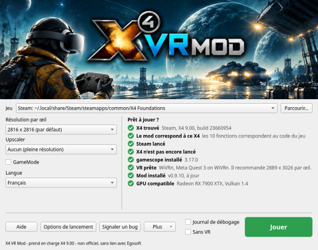
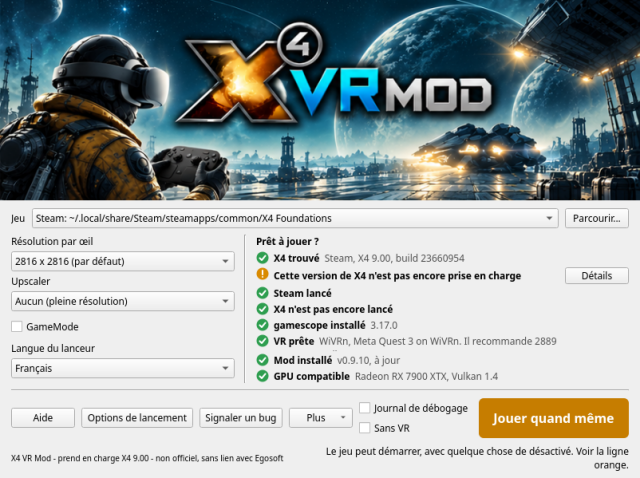
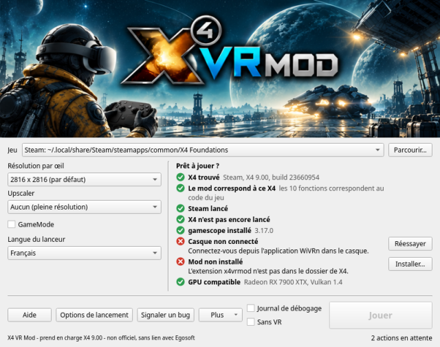
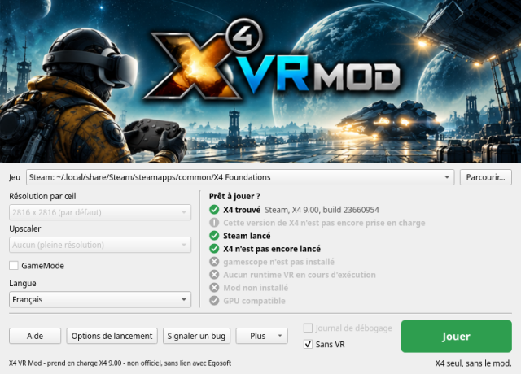
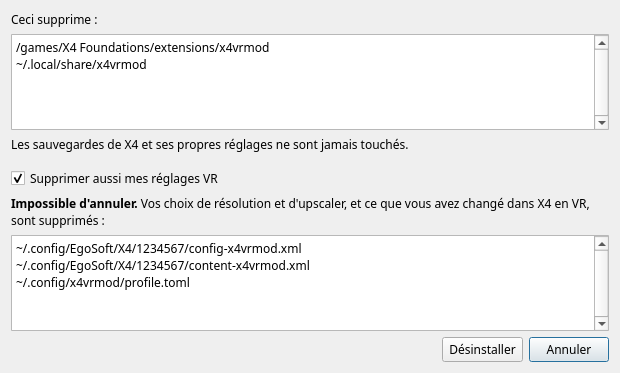
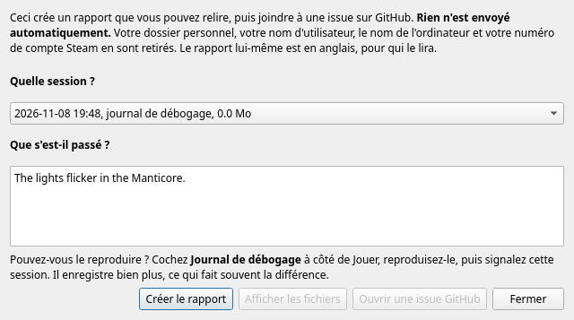

Cette fenêtre trouve X4: Foundations, met le mod en place, vous dit si tout est prêt et lance le jeu en VR. Laissez le pointeur sur n'importe quel élément de la fenêtre pour une courte explication. Cette page contient le reste.
Premiers pas | Jeu | Résolution par œil | Réglages par casque | Upscaler | GameMode | Langue du lanceur | Écart entre les yeux | Jouer | Sans VR | La liste de vérification | Options de lancement | Installer | Désinstaller | Plus | WiVRn ou SteamVR ? | Dépannage | Signaler un bug

La liste de vérification se met à jour toute seule : inutile de rouvrir quoi que ce soit après avoir lancé le runtime ou connecté le casque.
La copie de X4 à utiliser. Le lanceur demande à Steam laquelle de vos bibliothèques contient X4, et regarde dans la liste des jeux GOG de Heroic et dans ~/GOG Games. Si la vôtre n'apparaît pas, cliquez sur Parcourir... et choisissez le programme nommé X4.
Ce doit être la version Linux. Le mod modifie le programme Linux de X4 pendant qu'il tourne, et s'accroche à son moteur de rendu Vulkan par les mécanismes de Linux lui-même. La version Windows sous Proton est un autre programme : si vous choisissez X4.exe, le lanceur vous dit que cela ne peut pas fonctionner. Si Steam force Proton pour X4, désactivez-le dans les Propriétés de X4, rubrique Compatibilité, et laissez Steam télécharger la version Linux.
GOG : le lanceur la trouve, et tout fonctionne comme avec la copie Steam. Choisissez-la dans la liste Jeu si vous avez les deux.
Steam installé en Flatpak n'est pas pris en charge, et ce n'est pas prévu pour l'instant. Son bac à sable ne peut atteindre ni les composants du mod ni gamescope, et la VR y est plus difficile pour tous les jeux : il n'atteint que le Flatpak de WiVRn lui-même, et SteamVR y tourne avec des performances réduites. Si des joueurs le demandent, cela pourra changer ; dites-le dans une issue.
Le lanceur signale une copie de X4 installée par Steam en Flatpak. Utilisez le Steam des paquets de votre distribution, ou une copie GOG, qui n'a pas besoin de Steam.
La taille de l'image produite pour chaque œil. Ici, l'œil est toujours carré. Plus grande, l'image est plus nette, et votre GPU doit la dessiner deux fois, une par œil.
Pourquoi elle se choisit ici et pas dans X4 : les images du mod et l'écran de gamescope sont dimensionnés au lancement du jeu, et X4 applique immédiatement le choix fait dans son menu, ce qui casse une session en cours. Elle se choisit donc avant le lancement.
Quand le casque est connecté, la liste marque la taille la plus proche de ce que demande votre casque. C'est la recommandation du runtime, qui tient déjà compte des lentilles, et elle est généralement plus grande que l'écran du casque.
Au-dessus de 4068 par œil, la vue 3D de la carte est plate au lieu d'avoir de la profondeur, à cause de la façon dont X4 place les grandes images en mémoire. Avec SteamVR, 4224 a déjà donné une image brouillée ; si vous voyez cela, descendez.
Des points de départ, calculés à partir de l'écran de chaque casque. Moyen est l'image nette à plein coût. Bas est la même taille avec upscaler, donc X4 dessine moins de la moitié des pixels. Haut est une image plus grande avec upscaler, donc X4 dessine à peu près autant qu'en Moyen, et l'upscaler et l'image plus grande coûtent un peu plus en plus.
| Casque | Écran, par œil | Bas | Moyen | Haut |
|---|---|---|---|---|
| Meta Quest 3 | 2064 x 2208 | 2816 + FSR 1 Qualité | 2816 | 4224 + FSR 1 Qualité |
| Steam Frame | 2160 x 2160 | 2816 + FSR 1 Qualité | 2816 | 4224 + FSR 1 Qualité |
| Pico 4 | 2160 x 2160 | 2816 + FSR 1 Qualité | 2816 | 4224 + FSR 1 Qualité |
| Meta Quest 3S | 1832 x 1920 | 2400 + FSR 1 Qualité | 2400 | 3600 + FSR 1 Qualité |
| Meta Quest 2 | 1832 x 1920 | 2400 + FSR 1 Qualité | 2400 | 3600 + FSR 1 Qualité |
| Valve Index | 1440 x 1600 | 2048 + FSR 1 Qualité | 2048 | 3072 + FSR 1 Qualité |
| HTC Vive Pro | 1440 x 1600 | 2048 + FSR 1 Qualité | 2048 | 3072 + FSR 1 Qualité |
| HTC Vive | 1080 x 1200 | 1600 + FSR 1 Qualité | 1600 | 2400 + FSR 1 Qualité |
Seuls le Moyen et le Haut du Quest 3 ont été joués, sur WiVRn avec une Radeon RX 7900 XTX. Le reste applique la même règle à l'écran de chaque casque. Si vous en essayez un, ce que vous constatez est bienvenu dans un rapport de bug.
Un upscaler permet à X4 de dessiner une image plus petite puis de l'agrandir, au prix d'un peu de netteté. Quand il y en a un, « Rendu en » sous la liste indique la taille que X4 dessine vraiment.
Le choix automatique : passer au-dessus de 3200 par œil avec Aucun sélectionne FSR 1 Qualité, car dessiner deux fois autant de pixels dépasse ce que la plupart des GPU font avec fluidité. Une note le signale, et vous pouvez rechoisir Aucun pour l'annuler. Un choix que vous avez fait vous-même n'est jamais modifié, et revenir à 3200 ou moins ne remet Aucun que si c'est le lanceur qui avait choisi.
Si Feral GameMode est installé, cette case apparaît. Cochée, elle donne la priorité au jeu sur le reste du système pendant qu'il tourne, ce qui apporte généralement quelques images par seconde en plus. Elle s'applique quelle que soit la façon de lancer le jeu : Jouer, Sans VR, la ligne de lancement de Steam ou un terminal. S'il n'est pas installé, la case n'apparaît pas et rien ne change.
Cette fenêtre et cette aide s'ouvrent dans la langue de votre système quand c'est l'anglais, le portugais du Brésil, le français, le russe ou l'allemand, et en anglais sinon. La liste Langue du lanceur, sous GameMode, permet de la changer, et votre choix est conservé. X4 lui-même garde la langue que vous lui avez choisie dans X4 ou dans Steam.
Les traductions sont un premier jet, fait au mieux. Si un mot est faux ou sonne bizarrement, les corrections sont les bienvenues sous forme de pull request ou de commentaire sur une issue. Un rapport de bug, et ce qu'affiche la commande x4vrmod, restent en anglais, pour que quiconque les lit puisse les comprendre.
Il n'y a rien à régler : le mod prend l'écart entre vos yeux dans le casque, dès la première image. Tournez le réglage d'IPD du casque et le monde suit pendant que vous jouez.
Pour le remplacer, si le monde semble trop petit ou trop grand, indiquez votre propre écart en mètres. Un opticien ou une application de téléphone peut le mesurer. Il prend effet au prochain lancement du jeu, et reste jusqu'à ce que vous le retiriez :
x4vrmod config set ipd 0.0635
Celui-ci fait 63,5 mm. Pour revenir à celui du casque :
x4vrmod config unset ipd
Tant qu'un remplacement est en place, le monde ne suit plus le réglage du casque. Si le casque annonce un jour un écart qu'aucun œil ne pourrait avoir (hors de 50 à 80 mm), le mod n'y croit pas, garde le dernier bon ou sinon 64 mm, et le note dans son journal.
« Jouer » vert : tout est prêt.
« Jouer quand même » orange : le jeu peut démarrer, mais quelque chose ne fonctionnera pas. La ligne orange dit quoi. Cela arrive surtout après une mise à jour de X4.

« Jouer » gris : le jeu ne peut pas encore démarrer. Une ligne rouge dit pourquoi, généralement avec un bouton qui corrige.

Pendant que le jeu tourne, le bouton affiche « X4 est lancé » et le lanceur se fait discret. Ensuite, une ligne vous dit comment la session s'est passée.
Cochez Sans VR pour lancer X4 seul, sur votre écran, comme il démarre sans le mod, même si la VR tourne. Rien du mod n'est chargé et son extension reste désactivée : ce sont donc vos propres réglages et sauvegardes qui servent, et les lignes qui ne concernent que le mod passent en gris.

C'est un point de comparaison : si quelque chose ne va pas là aussi, ce n'est pas le mod, et c'est très utile à dire dans un rapport de bug.
Le lanceur a trouvé une copie Linux de X4 et lu sa version. Voir Jeu si ce n'est pas le cas.
Plusieurs fonctions du mod modifient le code de X4 en mémoire, et ont donc besoin exactement du code pour lequel elles ont été écrites. Plutôt que de comparer une somme de contrôle, qui rejetterait un petit correctif ne changeant rien de ce que nous touchons, le lanceur exécute les propres vérifications du mod sur le fichier de X4, fonction par fonction.
Si cette ligne est orange, les fonctions listées se désactivent par sécurité, et le jeu tourne quand même. Après une mise à jour de X4, attendez une nouvelle version du mod, ou jouez sans elles.
La version Steam de X4 a besoin que Steam soit ouvert, car X4 lui demande votre compte au démarrage. Une copie GOG n'en a pas besoin, et cette ligne n'apparaît pas.
Le mod doit être là dès le démarrage de X4 : une copie déjà ouverte doit donc d'abord être fermée.
gamescope donne à X4 un écran virtuel dimensionné pour les deux yeux, quelle que soit la résolution de votre bureau. C'est un programme à part ; installez-le depuis les paquets de votre distribution.
Le lanceur demande brièvement à votre runtime VR, via OpenXR, si un casque est là, sans démarrer de session VR, ce qui est plus fiable que de chercher des programmes en cours d'exécution.
Les composants du mod, que Installer... met en place ensemble. L'un se place entre X4 et votre GPU et produit les deux images, et ne se charge que lorsque le mod le demande, si bien qu'aucun autre programme n'est concerné. L'autre est une petite extension X4 dans le dossier extensions de X4, qui permet de tourner la tête plus loin que X4 ne le permet normalement et supprime le balancement de la caméra. « Pas à jour » signifie qu'ils viennent d'une autre version que ce lanceur ; Installer... les remplace.
Le mod dessine les deux yeux en une seule passe grâce à une fonction de Vulkan appelée multiview, et a besoin de Vulkan 1.2 et d'un descriptor set libre. Presque tous les GPU de ces dernières années les ont. Si cette ligne est rouge, mettez d'abord à jour votre pilote graphique.
Options de lancement vous donne la ligne exacte pour votre copie, avec un bouton Copier. Jouer est le plus simple, et celles-ci servent quand vous préférez lancer depuis Steam ou un terminal. Les deux lancent le mod comme Jouer, avec les réglages de cette fenêtre.
Steam remplace %command% par sa propre commande pour X4, et x4vrmod run lance X4 avec cette commande : il faut donc qu'elle y soit. Avec cette ligne en place, Steam lance toujours X4 en VR ; effacez-la pour rejouer sans VR.
Si Steam est réglé pour lancer X4 avec Proton, la ligne refuse de démarrer et dit pourquoi, car le mod ne fonctionne qu'avec la version Linux. Steam installé en Flatpak n'est pas pris en charge : voir Steam en Flatpak.
Le bouton Installer... apparaît sur la ligne de la liste qu'il corrige. Installé depuis un zip, il copie le mod dans ~/.local/share/x4vrmod et enregistre sa couche Vulkan pour vous seul : vous pouvez donc supprimer le dossier décompressé, et la ligne de lancement de Steam continue de fonctionner. Installé depuis un paquet, tout cela est déjà en place. Dans les deux cas, il place l'extension dans le dossier de X4.
Ce que cela fait à vos sauvegardes : X4 marque comme modifiées les sauvegardes faites avec une extension qui n'est pas d'Egosoft. L'extension du mod n'est activée que pendant les sessions VR, donc jouer sans VR n'est pas concerné.
Vos réglages : le config.xml de X4 n'est jamais modifié. En VR, le mod garde ses propres copies à côté, nommées config-x4vrmod.xml et ainsi de suite : ce que vous changez en VR reste en VR, et votre jeu sans VR garde ses réglages. La seule chose qu'il ne copie pas est l'échelle de l'interface de X4, qu'il démarre à 0,6, car le 1,0 de X4 est trop grand dans un casque. Vous pouvez toujours la changer dans les options de X4.
Dans Plus, pour qu'on ne puisse pas cliquer dessus par accident. Il liste tout ce qu'il va supprimer avant de le faire, et ne supprime jamais que les fichiers du mod. Les sauvegardes de X4 et ses propres réglages ne sont jamais touchés.

La case Supprimer aussi mes réglages VR est décochée par défaut. Laissez-la ainsi si vous pensez revenir. Cochée, vos réglages VR dans les dossiers de profil de X4 et les choix de cette fenêtre sont supprimés, et c'est irréversible.
Un paquet reste installé jusqu'à ce que vous le supprimiez avec votre gestionnaire de paquets.
Ouvrir les journaux : chaque session écrit son propre journal dans ~/.local/state/x4vrmod/logs (dans $XDG_STATE_HOME, si vous l'avez défini), et les 20 plus récents sont gardés. Celui d'une partie de débogage finit par -debug.log. Un rapport de bug a besoin du journal de la session qui a posé problème.
Ajouter au menu des applications : pour le zip, une fois installé. Un paquet a déjà son entrée.
Avancé : le champ de vision de X4, et des variables d'environnement supplémentaires pour essayer ce que demande un rapport de bug. Vous n'en avez pas besoin pour jouer.
Rétablir les valeurs par défaut : remet les réglages de cette fenêtre par défaut, en gardant le jeu et la langue choisis.
À propos : la version et la licence. C'est un mod non officiel, sans lien avec Egosoft et non approuvé par elle.
Nous conseillons WiVRn. Sur le même casque, il donne une image plus nette que SteamVR, dont l'image est généralement fluide mais plus floue, et il vous laisse choisir le codec vidéo. SteamVR a aussi donné une image brouillée à 4224 par œil, là où WiVRn reste net.
WiVRn diffuse vers les casques autonomes, comme le Quest et le Pico. Un casque relié au PC par câble, comme un Valve Index ou un HTC Vive, ne diffuse pas, et utilise donc SteamVR.
Sur WiVRn, c'est le codec vidéo qui fait le plus de différence. Il se choisit dans les réglages de WiVRn.
| Codec | À quoi s'attendre |
|---|---|
| AV1, via VAAPI | Semble le meilleur : une image nette avec une latence minimale. Il faut un GPU capable d'encoder l'AV1. |
| H.265 | Une image très nette, mais il ajoute de la latence, qui peut se voir sous forme d'artefacts et de saccades en jeu. |
| H.264 | Efficace, mais flou. |
Sur SteamVR, le codec est choisi pour vous. C'est généralement fluide, mais flou par rapport à WiVRn. C'est l'une des raisons pour lesquelles nous conseillons WiVRn.
Cela vient de l'overlay Steam, qui gère aussi Steam Input, et qui ne fonctionne pas avec Wayland. Le nouveau Steam 64 bits qui arrive pourrait finir par le résoudre.
Cela a été vu avec SteamVR à 4224 par œil. Choisissez une résolution par œil plus basse.
La ligne à côté de Jouer montre la dernière chose qu'a dite le lancement. Si cela ne l'explique pas, signalez-le : un rapport fonctionne même si le jeu n'est jamais allé jusqu'à écrire un journal.
Les rapports de bug, c'est ainsi que le mod s'améliore, et le lanceur fait l'essentiel du travail :

Si vous pouvez le reproduire, faites-le avec un journal de débogage. Cochez Journal de débogage à côté de Jouer, reproduisez le problème, quittez, et signalez cette session. Le jeu se joue de la même façon, et le journal enregistre bien plus de ce que faisait le mod. Il atteint des dizaines de Mo par session, alors laissez-le désactivé le reste du temps ; il est de nouveau désactivé la prochaine fois que vous ouvrez cette fenêtre.
Ce que contient un rapport : les versions du mod et de X4, votre système, GPU et casque, la liste de vérification, vos réglages, le journal de la session, et la trace d'un plantage si le système en a gardé une. C'est du texte brut, en anglais, et Afficher les fichiers vous permet de le lire.
L'écran de chargement en VR affiche la version, le build et la date du mod, dans son coin. C'est pratique à indiquer si vous ne parvenez pas jusqu'à créer un rapport.
Ce qui en est retiré : votre dossier personnel, votre nom d'utilisateur, le nom de l'ordinateur et votre numéro de compte Steam. Rien ne quitte votre ordinateur à moins que vous ne le joigniez vous-même.